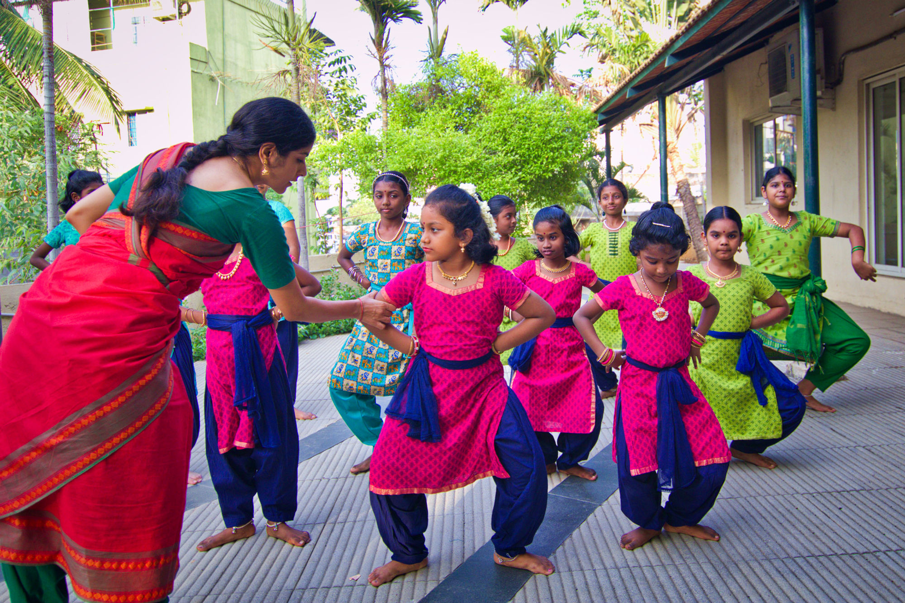
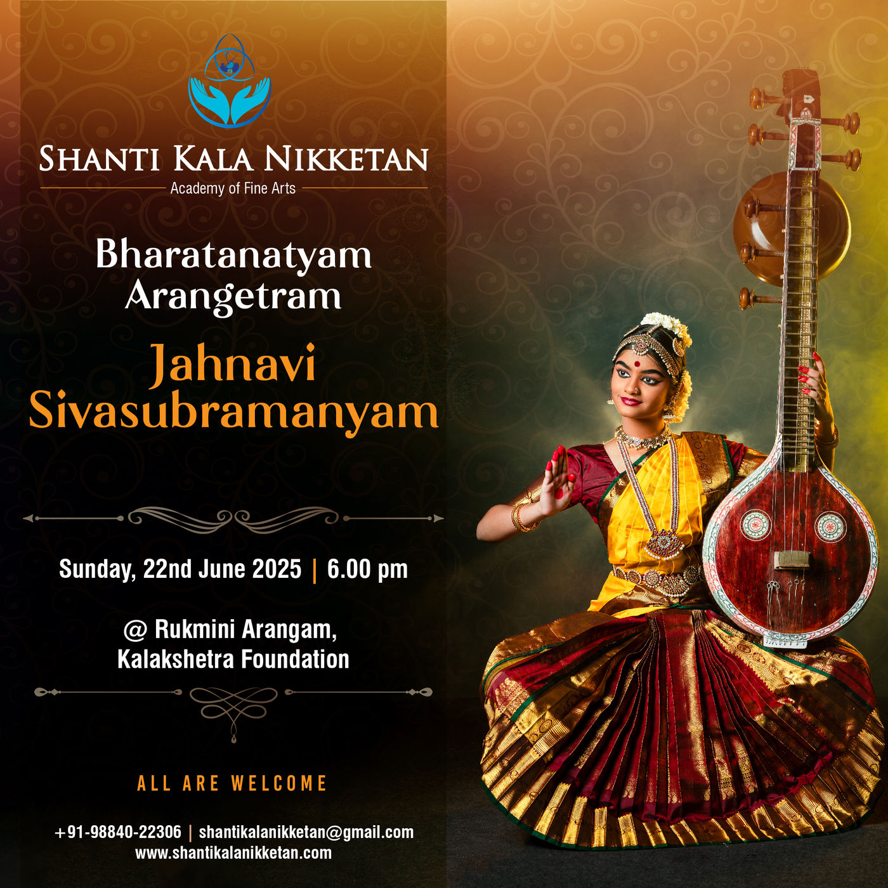
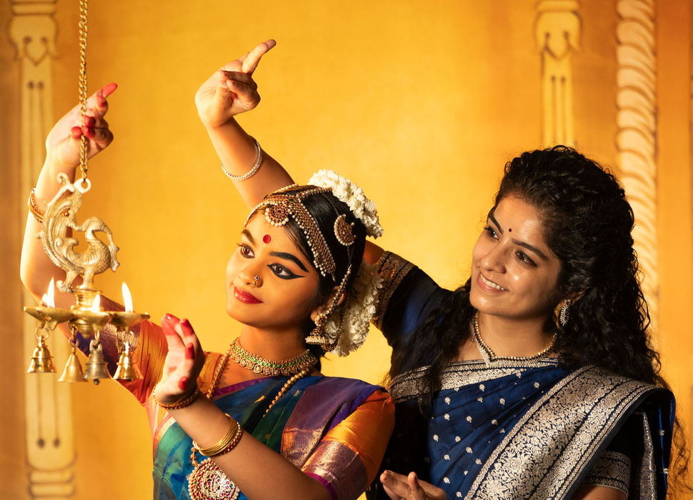
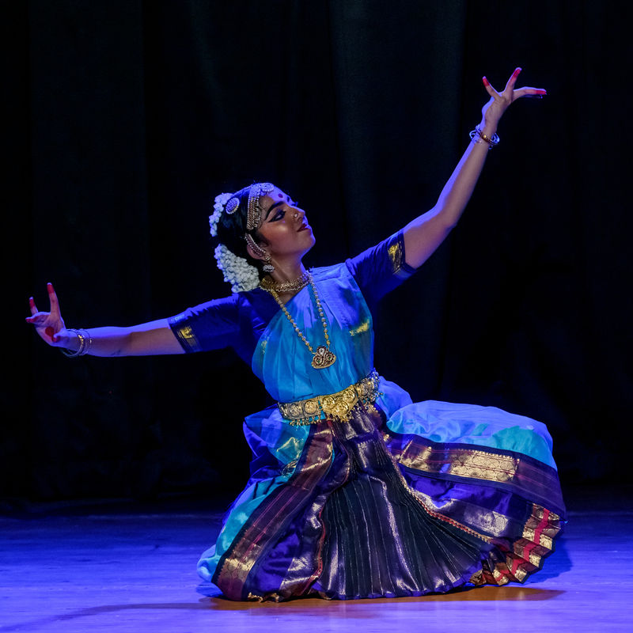
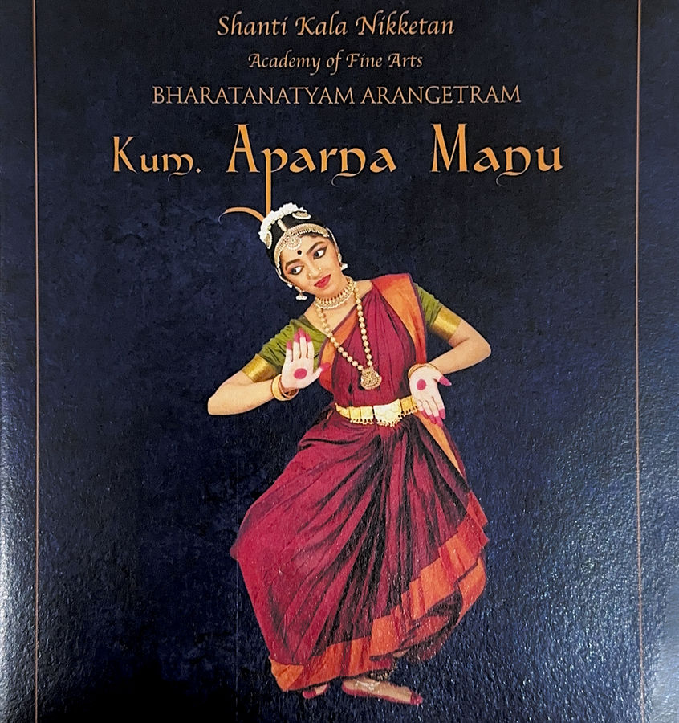
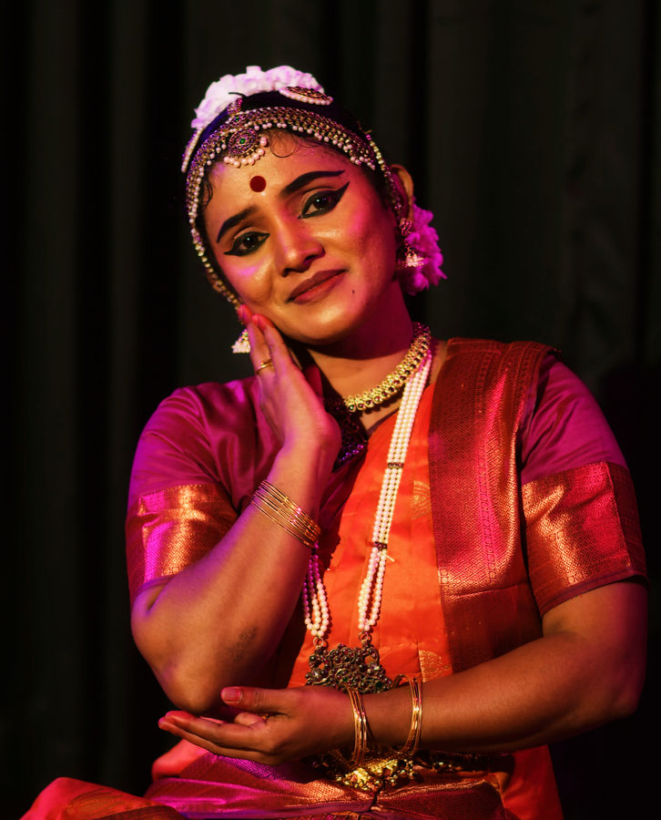
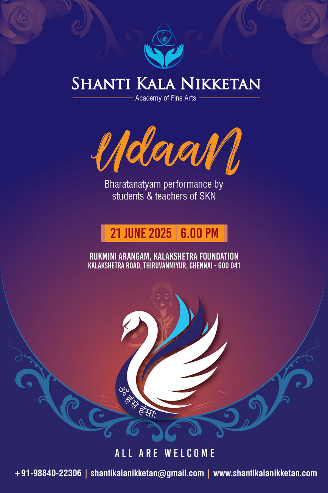
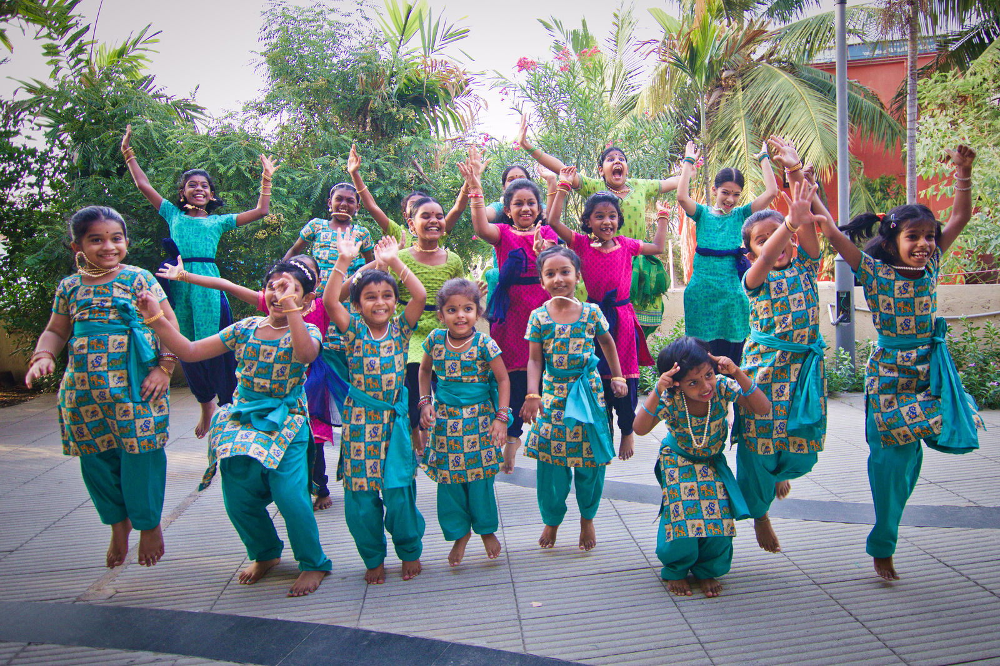

पताक
patāka
“the beginning of a dance”
Bharatanatyam in Chennai since 2009
One hand.
Seventeen meanings.
In Bharatanatyam a single gesture can be a lotus, a mirror, the full moon, a village, or unmistakable anger. Nothing about the hand changes. Only what it is asked to say.
This is what your child learns here — not steps, but a language.
अलपद्म alapadma can mean

सन्दंश
sandaṃśa
“making an offering to God”
“Everyone can learn dance. The only talent required is a talent to work hard.”
Sunitta Menghanaani · Co-founder & Artistic Director
Shanti Kala Nikketan was born on 18th April 2009. We nurture the Gurukulam style of education, where students practise the classical art form alongside the literature and mythology that give it meaning.
The Kalakshetra style of Bharatanatyam is our adopted method. We insist on a synergy of commitment and perseverance, where Guru and Shishya flourish together.
Founded
Cities
Stages of learning

हंसपक्ष
haṃsapakṣa
“to denote the number six”
Six levels, and a gentle way in before them
A child of four starts with shlokas and play. A dancer at Level 6 is preparing for Arangetram. Nobody is rushed.
Introductory Stage
Ages 4–6
Foundation Stage
Level 1 · Ages 6+
Strengthening Stage
Level 2
Transition Stage
Level 3

हंसास्य
haṃsāsya
“giving instruction”
The line is unbroken
Guru to shishya, and then shishya to guru. Two of the people who now lead Shanti Kala Nikketan learned to dance here.
-
Om Guru Om
Founder
The philosophical origin of the academy. “Art is not common; it is the divine expression which reveals itself.”
-

Sunitta Menghanaani
Co-founder & Artistic Director
Trained from the age of three; graduated in Bharatanatyam from Kalakshetra Foundation, Rukmini Devi College of Fine Arts. Awarded the Exemplar Award by the Dorai Foundation.
-

Aparna Manu
Head, Delhi Branch
Fifteen years a student of Sunitta — the academy’s first student. Now teaching in Delhi.
-

S. Kirusanthini
Head, Canada Branch
Seven years in the Kalakshetra style under Sunitta. Best Dancer Award, UNIPUN Sri Lanka. Now teaching in Scarborough.
भ्रमर
bhramara
“wings”
Udaan — flying high to reach our goals
Every dancer deserves a platform, whatever stage of learning they are at. Udaan is our annual offering to the art form, and to our students.
Like a swan separating milk from water, the guiding light of a Guru lets a shishya find the beauty in the art while overcoming its difficulties — and so fly to great heights.

अलपद्म
alapadma
“a village”
Three cities
Chennai, Delhi and Scarborough — two of them led by dancers who learned here.
-
Chennai
Tamil Nadu, India
Sholinganallur. Individual and group classes.
-
Delhi
India
Led by Aparna Manu.
-
Scarborough
Ontario, Canada
Morningside & Finch. Individual and group classes.

अलपद्म
alapadma
“to praise”
What families say
“My daughter walked in at five, shy of everyone. Last month she held a stage for four minutes on her own.”
Parent, Sholinganallur
“They teach the meaning behind every movement. She comes home and explains the stories to us.”
Parent, Chennai
Placeholder quotes. Real testimonials to be collected from families.
हंसपक्ष
haṃsapakṣa
“writing a letter with the nails”
Come and try a class
Tell us the dancer’s age and your city. We will do the rest.